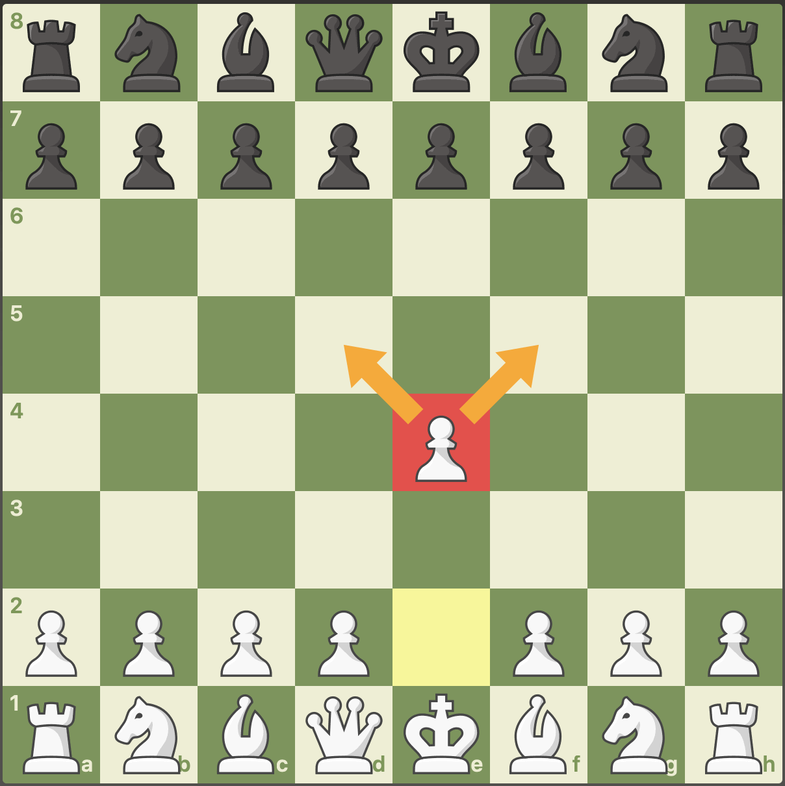
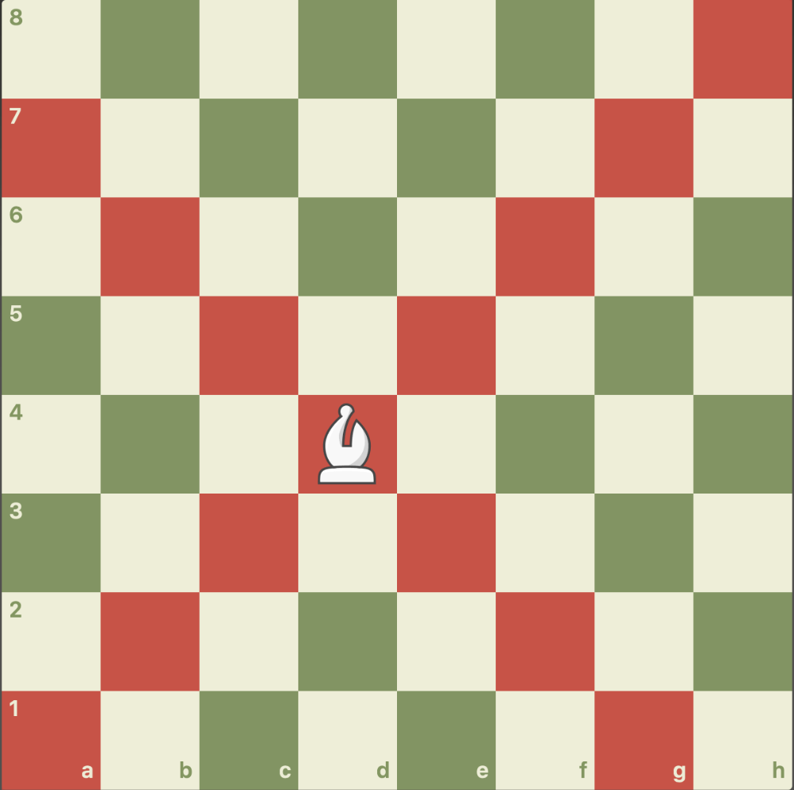
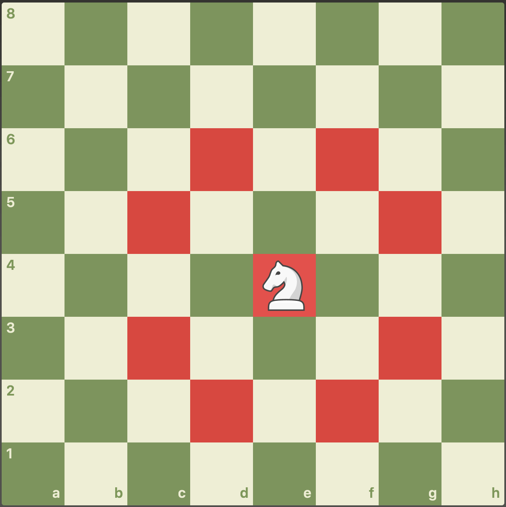
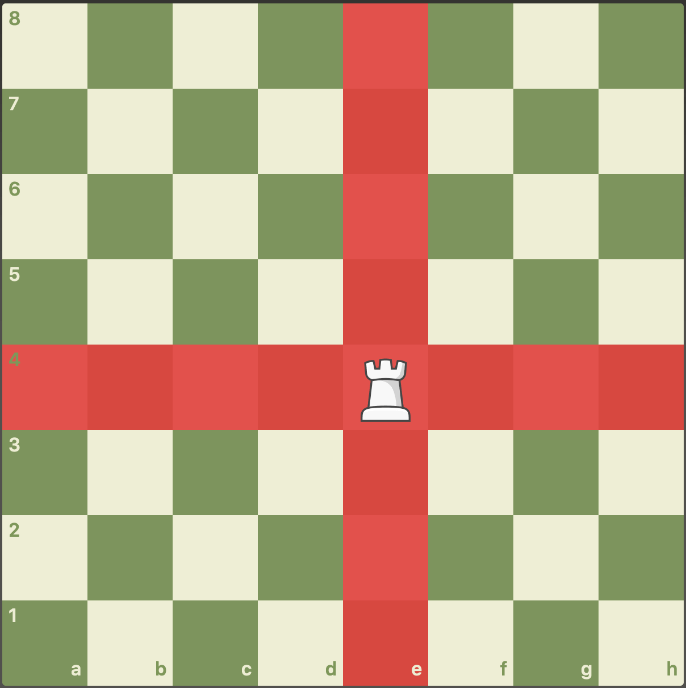
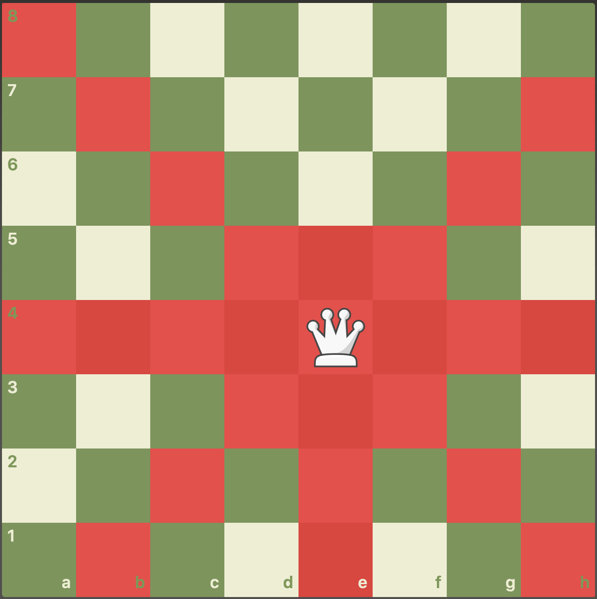
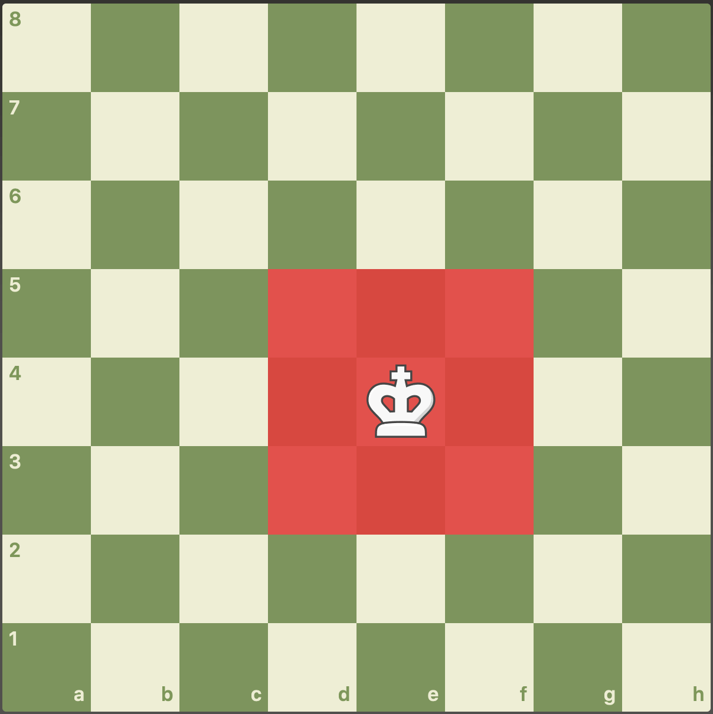

폰
폰은 앞으로 한 칸 이동합니다. 처음 움직일 때는 두 칸까지 갈 수 있고, 상대 말을 잡을 때는 대각선 앞으로 한 칸 이동합니다.
말의 이동
체스는 말마다 움직이는 방향과 거리가 다릅니다. 먼저 여섯 가지 말의 기본 이동 방법부터 익혀봅니다.

폰은 앞으로 한 칸 이동합니다. 처음 움직일 때는 두 칸까지 갈 수 있고, 상대 말을 잡을 때는 대각선 앞으로 한 칸 이동합니다.

비숍은 대각선 방향으로 원하는 만큼 움직입니다. 처음 놓인 칸의 색을 따라 계속 같은 색 칸에서만 움직입니다.

나이트는 ㄱ자 모양으로 움직입니다. 두 칸 이동한 뒤 옆으로 한 칸 꺾이며, 다른 말을 뛰어넘을 수 있는 유일한 말입니다.

룩은 가로와 세로 방향으로 원하는 만큼 움직입니다. 길이 막혀 있지 않은 줄이나 행에서 강한 공격을 만들 수 있습니다.

퀸은 가로, 세로, 대각선 방향으로 원하는 만큼 움직입니다. 이동 범위가 가장 넓어서 공격과 수비 모두에 중요한 말입니다.

킹은 모든 방향으로 한 칸씩 움직입니다. 가장 중요한 말이므로 상대 말에게 공격받는 칸으로는 이동할 수 없습니다.